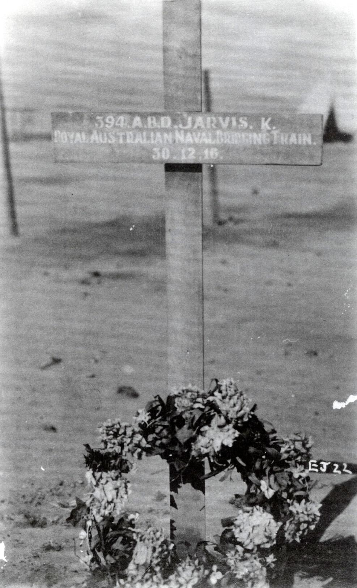
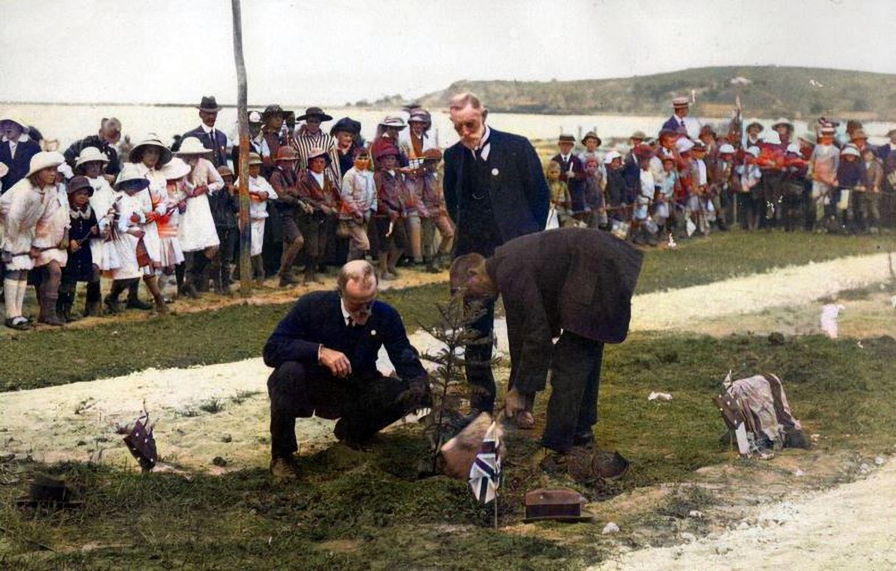
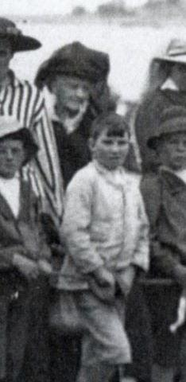
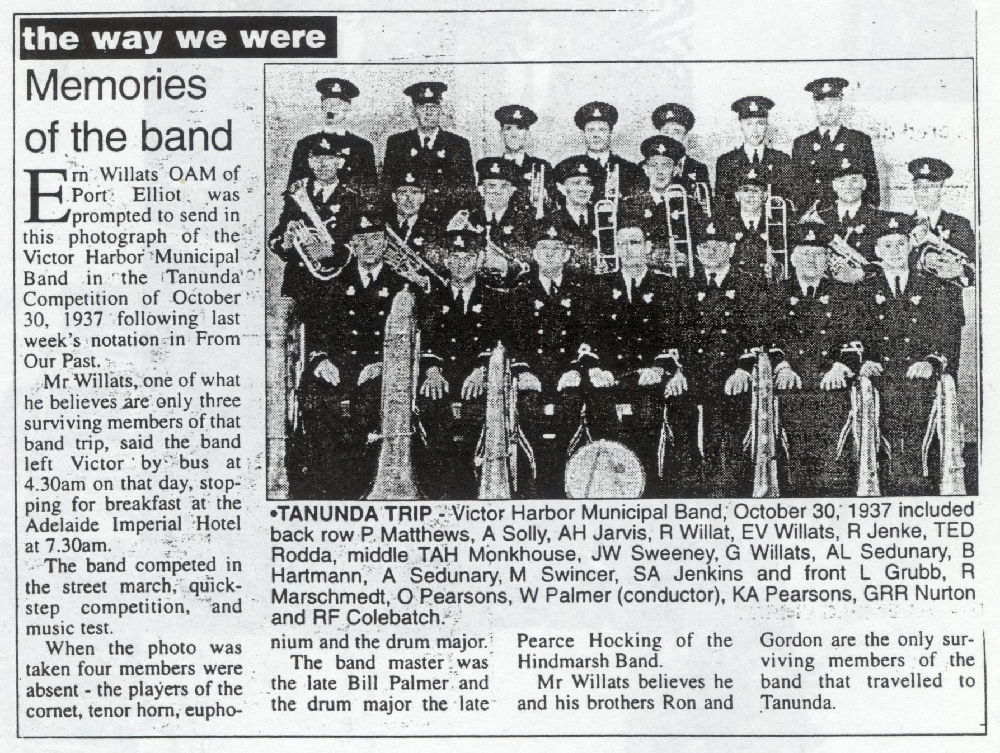
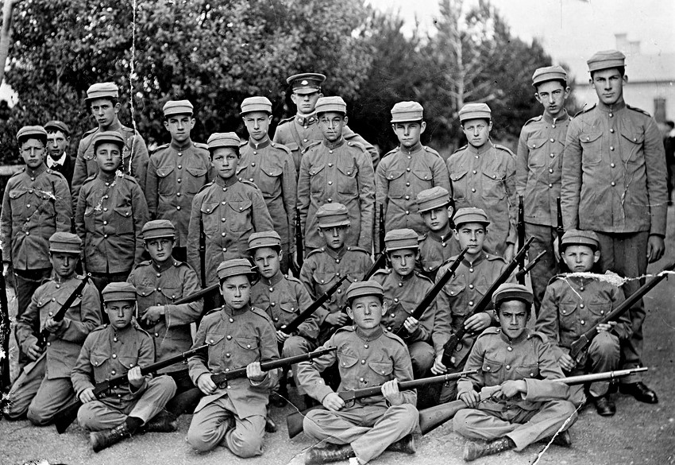

THE CHILDREN OF ARTHUR AND ELIZA JARVIS
Keith
Harold Arthur
Eric Roy
Reginald Lancelot
Leslie Douglas
Marjorie Alice Edith
KEITH
Born in Adelaide on the 18/10/1891 at Victoria Park S.A, the first child of Arthur and Eliza. His father was a carpenter with the S.A. Railways building stations. They lived at Tailem Bend and Mount Gambier, and then Arthur joined the police force and was stationed at Gawler. He remained there until about 1900 when the family returned to live at Victor Harbor. Keith attended school, belonged to the local band, life saving crew, football club etc. He became a fisherman and owned his own boat called the “Vida”. He fished the coastal waters as far away as Robe and around Kangaroo Island and had crayfish baskets. He caught seagulls and kept them in a pit which he dug in the backyard of their home in Bridge Street. People in those days cut the wings of the Seagulls and kept them to help keep their gardens free of invading pests.
World War I came along and Keith joined the Australian Imperial Forces — 6th Reinforce Unit on 8/9/1915.
His particulars are as follows:
Reg No. 394 - Rank ABD - Trade, fisherman — Address, Victor Harbor.
Next of Kin, Eliza Jarvis - Religion, Methodist
Rate of pay, 6/- per day - allotment in Aust. 5/- deferred pay 1/-.
Keith embarked at Melbourne on the HIVIAS RMS MOLDAVIA on the 5/10/1915.
This information was found in the files of the War Memorial records in Canberra.
Keith fought in the Middle East and after swimming in contaminated water near Cario he contracted a fever and died on 10/12/1916 aged 25 years. He is buried at Suez. This was a sad occasion for the whole family. Keith’s name appears on the “Roll of Honour” at the War Memorial in Canberra. At Victor Harbor there is a row of pines, each tree planted in memory of men from the area who lost their lives. There is a tree for Keith. Keith had not married before he left for overseas with his regiment however he had been engaged and planned to marry on his return.
The Vida
Click here to see the back
Keith's boat
Click here to see the back
Miss A James
Gladstone. 11/2/1917
Dear Auntie. I am sending this PC for your birthday.
This is Keith's boat with Harold, Reg, Allie Scott and myself on board.
You can also see part of the big ship that is here loading wheat.
Marj is sending Grannie a box of peaches for her birthday.
She will send you a parcel one day next week.
Harold and Marjorie went to town last Saturday and came back on Wednesday.
Mrs Scott ... after us. We are having lovely ... down here.
Got fish for dinner. Ask Aunty Ede if she would like some.
With love from Leslie.

Grave of Keith Jarvis

Planting a tree for Keith Jarvis
Postcard/photograph Dated 25th April, 1917 “Anzac Day” Victor Harbor.
Notation as follows: Planting a tree in memory of Keith. This card only shows part of the crowd near the enclosure, there are six trees been planted in memory of the Harbor boys that have died or been killed while on Active service.
No signature appears on the card. Eliza (Gran) and Les are in the crowd. Photo given by Alice Jarvis.

Eliza and son Les
Eliza - mother of Keith and his brother Leslie. Copied (and enlarged) from the original old photograph. As we do not possess photographs of either Eliza or Les in their younger years this is of particular interest as well as a special possession.
HAROLD ARTHUR
Born 1/ 8/ 1894 at Mount Gambier and died on 22/9/1946 at the Royal Adelaide Hospital. Harold lived much of his life with his brother Keith, joining in sporting and local activities in the areas where the family lived. He attended school at Victor Harbor and joined the Royal Imperial Forces in WW1 - 2nd Remount, 16th Battalion. No. 1323 along with his father and two brothers.
On his return he married a local girl, Isobelle, known as Belle, Whiting and they lived at Port Elliot, a few miles south of Victor Harbor. Belle died on 23/3/1959. They had one daughter named "Peggy” who married Adrian Ottaway and they had five children, the eldest was killed a road accident, twin girls deceased and Gillian is sadly what people call a “bag lady” in Victor Harbor. (Information given to me by David Jarvis in June 1997).
Harold was Warden at St. Jude's church and was the bell-ringer on Sunday mornings sang in the choir, and played a comet in the Victor Harbor Town band, He worked and eventually managed the local haberdashery store of David Bell in Port Elliot.

Memories of the band
Newspaper article and photograph of the Victor Harbor Municipal Band in the Tanunda Competition of October 30, l937.
Harold is in the back row, third from the left, holding a cornet.

Victor Harbor band
Back of the photo
A postcard from Jinnie (Eliza) James to her sister Miss A James (Al) showing the Victor Harbor brass band.
Harold is at bottom right seated on the ground holding the cornet “next to the little fellow”.
The postcard also mentions her daughter Marjorie and son Keith.

Harold and Roy Jarvis
Photo given by Alice Jarvis.
ERIC ROY
Born 2/6/1896 at Mount Gambier and died at Victor Harbor on 13/11/1967 after suffering a heart attack. He was known as “one of the Jarvis boys” joining in various sporting and local activities and attending school at Victor Harbor. He was born Eric, however was often called Roy or even Bill.
He joined the Australian Imperial Forces in 1915 along with his father and brothers. 5Th Division, Signal Company. No. 3548. Roy was decorated for bravery although he always remained modest about this. He was decorated with the Military Medal and two bars.
He joined the PMG department at Port Elliot as a telegraph messenger when he was 14 years old and transferred to Adelaide living with the Scott family at Thebarton where they owned and ran a general corner store. Here he met Alice Scott and in 1920 after his return from WWI he married Alice and they went by train to Sydney for their honeymoon with very little money. This only goes to show his adventurous nature staying with him all his life. They had two children Keith Scott born in 1923. Keith married Shirley Sanderson and they had three children. Shirley (ed. Jarvis) was born in 1926. Shirley married Gordon Sorensen and they had 3 children..
Roy was a telegraphist with the post office and came home one day and announced that they would be going to Darwin to live. This was in 1923 and Darwin was a small village at the other end of Australia. To travel there you had to firstly catch a train to Melbourne, then Sydney, and a boat then took you around the coast of NSW, Qld. And to the Northern Territory. At that time Alice was pregnant and was advised not to travel until after the birth of her baby. So Roy went on ahead and Alice followed when their son Keith was old enough to travel. They had a wonderful life in primitive conditions, spending two years there before returning to Adelaide. After the birth of their daughter Shirley they again took up another appointment in Darwin. On their return Roy held the position of postmaster at Cook on the Nullarbor Plain, Port Augusta, Ororoo, Port Pirie before returning to Adelaide where Roy was postmaster at Glenelg post office – the largest in the metropolitan area. He retired in July 1961.
Alice adapted to all these outlandish places taking it all in her stride. Both she and Roy
always saw the humorous side of things and lived their lives accordingly. Alice was an
expert cook and excelled at craft and sewing.
They finally retired to Victor Harbor enjoying the area where Roy had spent his boyhood days. They travelled a great deal within Australia in their Morris Minor car. After Roy's death, Alice moved to the city, sold their home and travelled the world. She finally moved to Victoria to be near her daughter Shirley and granddaughters, living in her own unit at the Old Colonist retirement village at Clifton hill. Here she made many friends and continued her craftwork. She did many bus trips around Victoria and managed her own home. At the great age of 96 she gave talks to several groups of people about her life and the early days in Darwin and many other places. She spoke to my Probus group of 100 ladies for an hour, sharing her memories and endearing herself to all. Alice was a very talented lady and lived to be 98 years of age. (2).
Both Peter and I were thrilled to be able to find Auntie Alice here in Melbourne and were privileged to be able to spend time with her in her later years.

Postcard from Eric Roy - football team. Dated - 29/1/18
Click here to view the back
The above photo/postcard was addressed to “Miss E James, Costumer, Gladstone S.A. The message reads as follows: Here's your Billy after we gave the 8th brigade Hqrs a doing. In case you can't find me I am in the front row third from the right. Our Officer is center figure in the back row. Signed “Roy”. (Ed. Third from left (centre) looks to me more like Roy).
Football Victor Harbor - 1914
Click here to view the back
Postcard/photograph: Notation on back says “Football Victor Harbor”. Front row third from right Roy Jarvis. Second row first left end Harold Jarvis.(Ed. For me, third from right more resembles Keith than Roy)
World War I Personal Record for Eric Roy Jarvis - 35451
As a young man Eric Roy had been a Senior Cadet in the 75th Division for 18 months and had been rejected at this time as unfit. No details are given.
Roy applied to enlist at Keswick and passed his medical on the 3'6 July 1915.
He served in Egypt and France and spent two periods of leave in England, in June 1817 and October 1918.
Description on enlistment: Date 13 July 1915 at Keswick S.A.
Place of birth Mount Gambier Trade/occ, Postal assistant.
Age 18 years 11 months Height 5 foot 3 inches
Chest 31.33” Complexion fair
Eyes brown Hair auburn
Rel. Church of England
Next of Kin: Mrs Eliza Jarvis, Bridge Terrace, Victor Harbor
Date of embarkment: 27 October 1915 at Adelaide on H.M.A.T. “Bennalla”
No, 3548. 5th Division Signal Company Australian Engineers
Citation as printed in the Australian Archives National Office. World War I Personnel
Records Service Canberra. Series B2455. Title ”Personnel dossiers for 15th Australian
Imperial Forces ex-service members.”
Awarded the Military Medal and Bar Australian Imperial Forces List No. 389
Awarded Bar to Military Medal Fourth Army Routine Order No. 2507 dated 15/9/18
Recommended by Major C.O. 5th Divisional Signal Coy.
Action for which commended: For gallantry and devotion to duty. On 29th September
1918, whilst proceeding with a party from Brigade Headquarters near Templuex-1a-
Guerard to establish advanced Brigade post about 100 yards west of Bellicourt they came under heavy enemy shellfire directed upon the road between Harigicourt and Bellicourt and suffered casualties. He rallied the uninjured men proceeded to the advanced post and successfully established communications. The line was urgently required at the time to connect Brigade and Battalions and it was due to the excellent example he set to the men under his command that communication was so successfully established.
Signed J. Talbot Hobbs, Major General, Commanding 5th Australian Division.
Roy joined as a Private was promoted to Corporal and finally a Sergeant.
After the War ended he travelled to England at the end of January 1819 where he boarded the ship “Tras Montes” to sail for Australia. He was discharged in July 1819.
Special thanks to Keith Jarvis for a loan of his father's personal military records.

Eliza consent letter

E.R. Jarvis AIF

E.R. Jarvis military medal
Keith Jarvis - aged 9 months
Taken on the verandah of their home in Darwin
Jarvis family christmas 1953
Photo taken 20th December 1953 at Glenelg where Roy and Alice held a family Christmas Party.
Standing: Belle Jarvis, Shirley Sorensen (with child), Helen Brougham, Shirley Jarvis (behind),
Lily Stennett, Lorna Scott (wife of Cyril Scott), Alice Jarvis (at rear), Marg Milkins.
Children: Lynn Jarvis far right, Kerryl Sorensen far left, others to be identified.
Alice Jarvis at her home at the Old Colonists Retirement Village in Melbourne
with her nephew Peter Jarvis. Alice was 96 years old in the photograph.

Alice Jarvis being presented with a basket of flowers by Marjorie Whitfield
a member of the Probus Club in Doncaster where Alice had just addressed 100 ladies.
Alice at this time was 95 years old.
REGINALD LANCELOT
Born on 13/4/1899 at Gawler. Again he lived as his brothers had done, joining in sporting and local activities, and attending school at Victor Harbor. He was only 15 when WWI broke out and was a rejected volunteer because he suffered from varicose veins. He stayed at home with his mother, brother Leslie and sister Marjorie.
Reg joined the Postmasters Department at Goolwa when he was 15 years old. He was
moved to Wolsely then Bordertown where he met Eunice Harris born on 14/10/1899.
They married at Cummins SA on the 31/3/1923 and had 3 children.
Ronald Harris born 6/12/1923 married Jean Patterson in 1950 and they had 5 children.
Marjorie known as Margaret married Peter Minnis and they had 5 children.
Kay married Ron Pearson and they had 2 children. Kay divorced and married Graham
Potter.
Reg was Postmaster at Robe, Pinaroo, Loxton, Portland and Mildura and relief staff at Adelaide GPO. He and his family had many moves over the years.
They were living at Loxton when Eliza went to stay with them and died at Loxton on 26/6/1955 aged 86.
Reg and Eunice retired to Murray Bridge where he died on 3/11/1983. Eunice is still alive today (ed. 2000) now aged 100 years old and living in a retirement village in Adelaide. (Keith Jarvis note : Lived to 104)

Eunice and Reginald Jarvis
celebrating their 50th wedding anniversary

Cadets taken at Victor Harbor School - 1910
Back row : Jack Tewin, Bill Taylor, Fred Banner, Fred Hill, Corp. Osborne, George White
Padman, Owne Richardson, Milton Chile, Bill Halliday.
Second row: Henry Pearsons, Bon Sladdern, Owen Broadbent
Third row : Frank Henderson, Darcy Honeyman, REG JARVIS, Oswald Sowerby
Bill Walker, Colin Collins, Bert Hussey, Lawrie Swain.
Front row : Geoff Hand, Tom Hough, D'Auverger Boxall, Mickey White.
Click here to view the page from the book
State Library of S.A.

The family of Eunice and Reg Jarvis
Left to right: Ronald, Reg, Eunice, Kay and Marjorie, known as Margie
Photos kindly given by Ron Jarvis
LESLIE DOUGLAS
Born on 18/2/1904 died 9/4/1984. There is a complete chapter on Leslie as he is our
direct ancestor.
MARJORIE ALICE EDITH
Born on 21/4/1909 at Victor Harbor died in hospital in Adelaide, suffering from cancer
and diabetes in 1993. Marjorie married Gordon Milkins in 1934. They did not have any
children. They lived in Barrelder Road, Torrens Park.

Marjorie and Gordon Milkins
Marjorie worked in the office of Lensworth Finance. She became secretary to the Chief
Executive, holding the position until her retirement. Her mother Eliza lived with Marj
and Gordon for several years before her death in 1955.
After Gordon's death, Marj sold their home and bought a unit in Unley where she lived until her death.
Marj Milkins and Peter Jarvis

Signature of Marj Jarvis in 1923.
Date 4th, 8, 1923.
Roy Jarvis, Marj Milkins, Alice Jarvis and Gordon Milkins. March 1952
Roy and Alice Jarvis and Marj Milkins at Parliament Gardens Warnambool
Roy Jarvis and Marj Milkins. Date unknown.
(Keith Jarvis note : “Acting the goat as usual”)